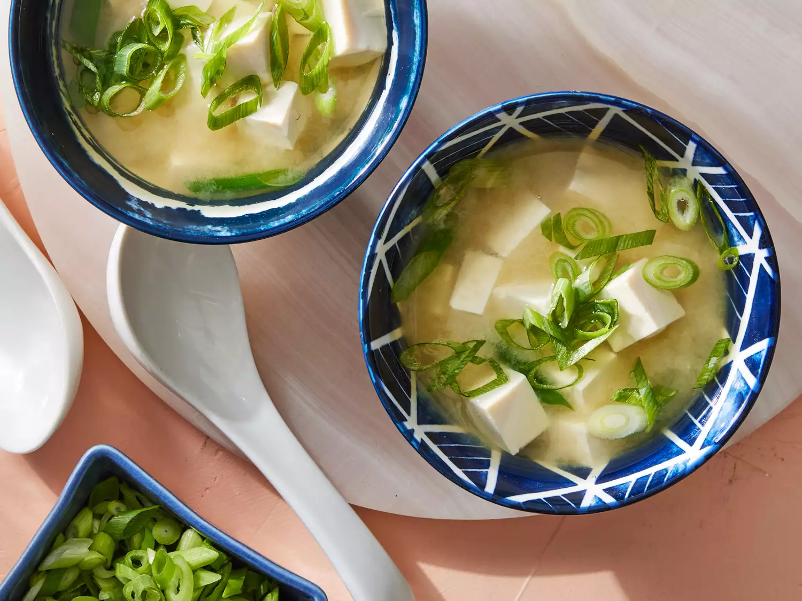

Miso Soup
Description
This miso soup is full of savory flavors. Add more dashi to your soup if
you want a stronger stock. You can use yellow, white, or red miso paste
for this soup — yellow miso is sweet and creamy, red miso is stronger
and saltier.
Ingredients
- 4 cups water
- 2 teaspoons dashi granules
- 3 tablespoons miso paste
- 1 (8 ounce) package silken tofu, diced
-
2 green onions, sliced diagonally into 1/2 inch pieces
Steps
- Gather all ingredients.
-
Combine water and dashi granules in a medium saucepan over medium-high
heat; bring to a boil.
- Reduce heat to medium and whisk in miso paste.
- Stir in tofu.
-
Separate the layers of green onions, and add them to the soup. Simmer
gently for 2 to 3 minutes before serving.
Home